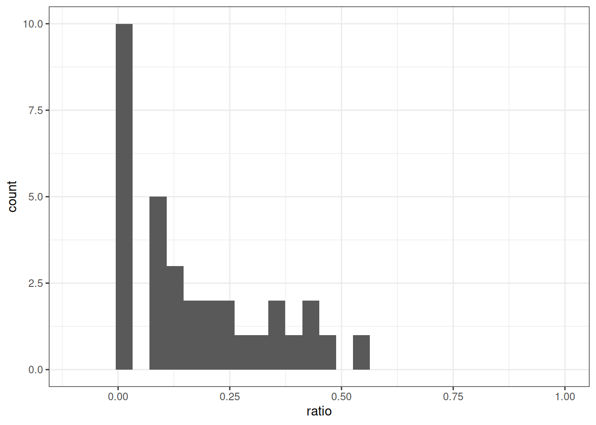
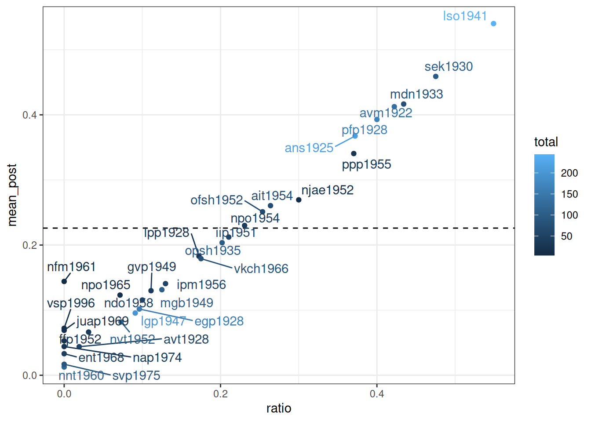
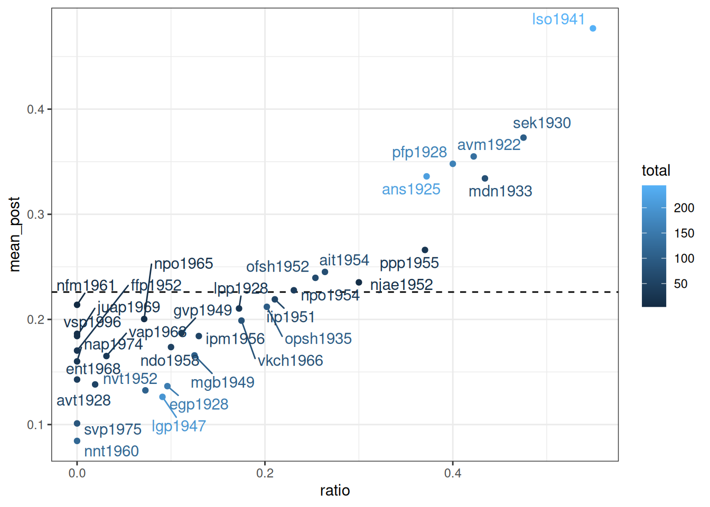
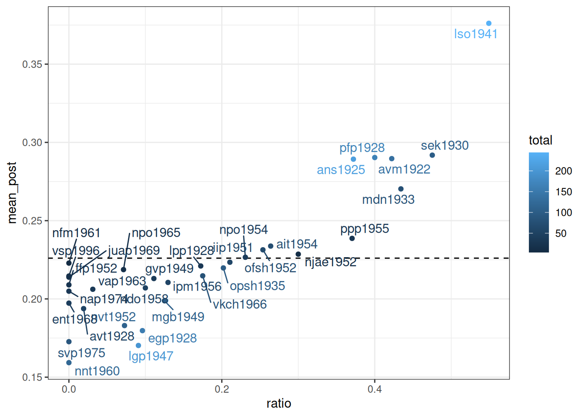

library(tidyverse)9 Эмпирическая байесовская оценка
Метод эмпирической байесовской оценки (Empirical Bayes estimation) — один из байесовских методов, в рамках которого:
- производят оценку априорного распределения вероятностей на основании имеющихся данных
- используют полученное априорное распределение для получение апостериорной оценки для каждого наблюдения
Рассмотрим пример данных из статьи (Daniel et al. 2019), в которой аннализировались интервью с людьми из деревени Михалёвская и исследовался ряд консервативных и инновативных черт в их речи.
mikhalevskaja <- read_csv("https://raw.githubusercontent.com/agricolamz/2024_HSE_b_da4l/master/data/ustya_data.csv")Rows: 359 Columns: 7
── Column specification ────────────────────────────────────────────────────────
Delimiter: ","
chr (3): speaker, gender, feature
dbl (4): year, conservative, innovative, total
ℹ Use `spec()` to retrieve the full column specification for this data.
ℹ Specify the column types or set `show_col_types = FALSE` to quiet this message.glimpse(mikhalevskaja)Rows: 359
Columns: 7
$ speaker <chr> "avm1922", "ans1925", "avt1928", "egp1928", "lpp1928", "p…
$ year <dbl> 1922, 1925, 1928, 1928, 1928, 1928, 1930, 1933, 1935, 194…
$ gender <chr> "f", "f", "f", "f", "f", "f", "m", "f", "f", "f", "f", "f…
$ conservative <dbl> 92, 56, 12, 33, 2, 83, 22, 22, 33, 60, 58, 11, 55, 8, 30,…
$ innovative <dbl> 60, 70, 46, 127, 23, 127, 41, 88, 85, 103, 200, 73, 70, 5…
$ total <dbl> 152, 126, 58, 160, 25, 210, 63, 110, 118, 163, 258, 84, 1…
$ feature <chr> "adj", "adj", "adj", "adj", "adj", "adj", "adj", "adj", "…Представим себе, что мы решили задаться целью найти наиболее диалектных носителей:
library(tidytext)
mikhalevskaja |>
mutate(ratio = conservative/total,
speaker = reorder_within(speaker, ratio, feature)) |>
ggplot(aes(ratio, speaker, color = gender))+
geom_point()+
facet_wrap(~feature, scales = "free")+
scale_y_reordered()
Не очень легко это анализировать… Давайте выберем один признак – подъем a: консервативными считались формы [ꞌpʲetʲero], а инновативной – реализация [ꞌpʲatʲərə]. Посчитаем долю и отсортируем:
mikhalevskaja |>
filter(feature == "a-e") |>
mutate(ratio = conservative/total) |>
arrange(desc(ratio))В целом, всего в интервью встречается от 4 до 244 контекстов для реализации признака. Хотим ли мы верить, что lpp1928 с 29 наблюдениями диалектнее, чем mgb1949 с 104 наблюдениями, только на основании доли?
mikhalevskaja |>
filter(feature == "a-e") |>
mutate(ratio = conservative/total) |>
ggplot(aes(ratio))+
geom_histogram()+
xlim(-0.1, 1)`stat_bin()` using `bins = 30`. Pick better value `binwidth`.Warning: Removed 2 rows containing missing values or values outside the scale range
(`geom_bar()`).
Мы можем провести байесовский апдейт, но для этого нам нужно априорное распределение. Трюк, который предлагает байесовская эмпирическая оценка заключается в том, что априорное распределение можно попробовать получить на основании данных:
mikhalevskaja |>
filter(feature == "a-e") |>
mutate(ratio = conservative/total) |>
filter(ratio != 0, # оказывается fitdist плохо работает, когда много крайних точек
ratio != 1) ->
for_beta_estimation
beta_est <- fitdistrplus::fitdist(for_beta_estimation$ratio, distr = 'beta', method = 'mle')
beta_estFitting of the distribution ' beta ' by maximum likelihood
Parameters:
estimate Std. Error
shape1 1.590621 0.4127354
shape2 5.445977 1.5766951Сделаем байесовский апдейт:
mikhalevskaja |>
filter(feature == "a-e") |>
mutate(alpha_prior = beta_est$estimate[1],
beta_prior = beta_est$estimate[2],
alpha_post = conservative+alpha_prior,
beta_post = innovative+beta_prior,
mean_post = alpha_post/(alpha_post+beta_post),
ratio = conservative/total) |>
ggplot(aes(ratio, mean_post, label = speaker, color = total))+
geom_hline(yintercept = beta_est$estimate[1]/sum(beta_est$estimate), linetype = 2)+
geom_point()+
ggrepel::geom_text_repel()Warning: ggrepel: 1 unlabeled data points (too many overlaps). Consider
increasing max.overlaps
Как видно, байесовская оценка не сильно отличается от старой оценки средним, однако таким образом мы можем видеть, что после байесовского апдейта наблюдения с маленьким количеством наблюдений льнут к среднему априорного распределения. Мы можем даже умножить параметры нашего априорного распределения на 10, чтобы показать это:
mikhalevskaja |>
filter(feature == "a-e") |>
mutate(alpha_prior = beta_est$estimate[1]*10,
beta_prior = beta_est$estimate[2]*10,
alpha_post = conservative+alpha_prior,
beta_post = innovative+beta_prior,
mean_post = alpha_post/(alpha_post+beta_post),
ratio = conservative/total) |>
ggplot(aes(ratio, mean_post, label = speaker, color = total))+
geom_hline(yintercept = beta_est$estimate[1]/sum(beta_est$estimate), linetype = 2)+
geom_point()+
ggrepel::geom_text_repel()
mikhalevskaja |>
filter(feature == "a-e") |>
mutate(alpha_prior = beta_est$estimate[1]*40,
beta_prior = beta_est$estimate[2]*40,
alpha_post = conservative+alpha_prior,
beta_post = innovative+beta_prior,
mean_post = alpha_post/(alpha_post+beta_post),
ratio = conservative/total) |>
ggplot(aes(ratio, mean_post, label = speaker, color = total))+
geom_hline(yintercept = beta_est$estimate[1]/sum(beta_est$estimate), linetype = 2)+
geom_point()+
ggrepel::geom_text_repel()
Или в формате гифки:


Coretta, Stefano. 2016. “Vowel Duration and Aspiration Effects in Icelandic.” University of York.
Daniel, Michael, Ruprecht von Waldenfels, Aleksandra Ter-Avanesova, Polina Kazakova, Ilya Schurov, Ekaterina Gerasimenko, Daria Ignatenko, et al. 2019. “Dialect Loss in the Russian North: Modeling Change Across Variables.” Language Variation and Change 31 (3): 353–76. https://doi.org/10.1017/S0954394519000243.